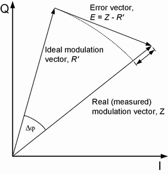

The error vector E = Z - R’ is calculated as an array at each sample in the measurement interval. From E and Z the following arrays can be calculated:
| E | = | Z - R’ | | Magnitude of the error vector, calculated at each sample in the measurement interval. |
Δ φ | Phase error |
| Z | - | R’ | | Magnitude error |

In general, the measurement dialogs show the relative magnitude error and the relative EVM, i.e. the quantities defined above divided by the magnitude of the ideal modulation vector | R’ |.
The error vector magnitude is calculated as the ratio of the RMS value of E to the RMS value of R’ in percent or in dB:
EVM in % = (RMS (E) / RMS (R’)) * 100
EVM in dB = 20 log (RMS (E) / RMS (R’))
The code domain error (CDE) is calculated as follows: The error vector E = Z - R’ is descrambled and projected onto all code channels of a specific spreading factor (SF). For each of the resulting projected error vectors Ek (k = 0 to SF - 1), the RMS value is calculated. The CDE is calculated as the ratio of this RMS value to the RMS value of R’, i.e. PCDE = 20 * log (RMS (Ek) / RMS (R’)) dB.
The peak code domain error (PCDE) is the maximum code domain error. It is calculated as:
PCDE = 20 * log (max RMS (Ek) / RMS (R’)) dB.